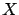
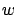

Siguiente: Cálculo de la distancia
Subir: Cálculo del ángulo de
Anterior: Ángulo de orientación de
Índice General
Para determinar el ancho de la calle, el próximo paso es hallar el
punto más cercano de la ``cuadra más cercana'' (punto  en la
figura10.4) para así obtener luego la pendiente de la
recta que une al móvil con dicho punto. Con el valor de la pendiente
y el punto , se procede a crear un semirrecta con origen en y
tamaño fijo (lo suficientemente grande para asegurar la intersección
con cuadras enfrentadas de la misma calle). Luego, se recorren
nuevamente las manzanas cercanas, se obtiene el punto de
intersección entre la semirrecta y cada una de las cuadras de dichas
manzanas y se mide la distancia entre dicho punto y el punto . La
distancia mínima obtenida al finalizar el recorrido será el ancho de
la calle () donde está ubicado el móvil.
SAPO